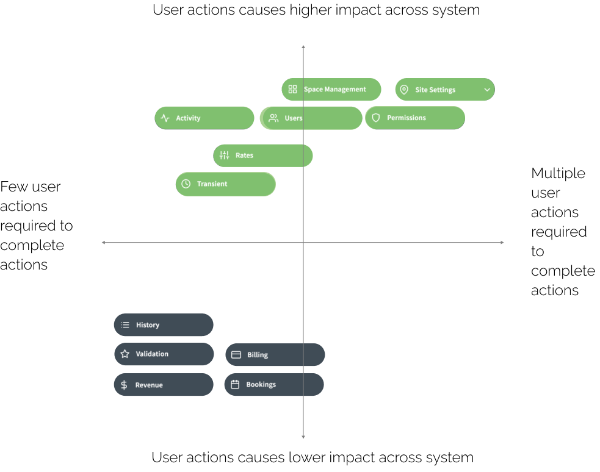

Revamping the Dashboard
for a client’s parking site management application
When presenting screenshots of the application to potential buyers, the UI did not easily show all the features it's capable of processing. I noticed a lack of affordances when collecting observations about the usability of the application, particularly on the Overview dashboard.
I learned about the product and design constraints to the project. I chose to analyse the content within each of the menu items of the navigation sidebar to understand assumptions about user needs. By doing this, I could select the most important data that would be best suited to replace their current Overview dashboard.
- Led to the decision to analyse the current application and interview stakeholders as if I were new to the company as first, a product owner and then, as a new user.
- Lead to an opportunity to be apart of the team and adapt to the team dynamics in order to better advocate for design solutions.
- Narrowed the scope to addressing the Overview dashboard layout first.
- Because the application has a real-world implication and references to an actual physical space, I wanted the application to visually reference to physical space where it was useful
- Each area of the dashboard shows a summary of information from their respective menu-items; interacting with any of the menu items allows the user to easily associate information with menu-items without getting confused or overloaded with information
- The spatial map shows immediate information about parking locations and broad activity status in pie charts
- The pie charts act as "Site setting" and "Space management" information, with the ability to interact with each chart for further details about each location
- Although the pie chart information does not change daily, it provides a frame of mind to the rest of the information displayed in the dashboard
- "Tenants and bays across all sites" and "Occupancy details" associates User and Activity menu-item content at a broad level for the spaces shown on the map
- Revenue and occupancy rates were turned from data tables into visual interactive graphs
- One of the key features of the application is its ability to compare datasets; it was important show this feature visually so as to guide the user through the vast amounts of information
- Selecting a pie chart on the map introduces the user to further details about that specific location (including all its associated datasets across menu-items) in further detail
- One of the key features of the application is its ability to compare datasets; it was important show this feature visually so as to guide the user through the vast amounts of information
- Selecting a pie chart on the map introduces the user to further details about that specific location (including all its associated datasets across menu-items) in further detail
- To solve for secondary menues and wizard forms, I advocated for applying visuals where the task normally would require visual documents for example, physical drawings of parking sites
information architecture
Whatever bespoke features pitched was lost in the sheer amount of data tables across the 13 menu-items. And with little affordances to guide users, it was clear to see information architecture was one of the UX gaps. The following steps details my approach to prioritizing content for the purpose of designing a new dashboard.
Menu items in the side bar were listed somewhat arbitrarily with each menu item related to a specific user task. Examining each screen provided insight into the kinds of tasks users completed.

What can the user see?
What actions can the user perform (i.e. searching, exporting, etc.)?
Why is the information valuable for users?
What does the user want to do with the information?
Would the user need to perform any actions prior?
Defining the purpose of each screen helped contextualize the interviews with stakeholders and identify relationships between product, people, and the system. Interview answers clarified stakeholder assumptions regarding the target user.
Understanding the relationship between location of parking and vehicle status
and
how the application shows this relationship systemically
vs
the user’s mental model for completing their roles and responsibilities in this industry

Each of the 13 menu-items display content to help the target user complete related tasks. The ability to complete a task varies by the number of actions the user must take.
Example task: opening physical parking gate
Menu-items:
Site settings, Activity, Revenue
Example task: Adding a new promotional parking rate
Menu-items:
Rates, Transient, Permissions, Users, Space Management
Example task: download data table
Menu-items:
History, Validation, Bookings
Example task: update fee amount on table row
Menu-items:
Billing
These menu-items reflect tasks of highest priority.
Site settings, Activity, Revenue, Rates, Transient, Permissions, Users, Space Management
Of the narrowed down list of menu-items, some interactive components can trigger changes to datasets in other areas of the system without the user's knowledge thus leading to confusion.
For example, if a user updated the parking fee attributes for a single vehicle, it may override other billing charges across accounts (unbeknownst to the user who made the change).
By defining the relationship between the task the user completes in a menu-item, the number of interactions associated to each menu-item, and the impact the interaction has on other menu items, I narrowed the menu-items to highlight changes between:
Space management and Site settings, Activity and Users,
Relationship between menu-items
The simpler the relationship, the better the content will be for a dashboard.
The higher the priority and the fewer interaction actions associated to it, the better the content will be for a dashboard.

The higher the priority and the less it triggers unknown changes across the system, the better the content will be for the dashboard.
- Data about spaces and vehicles from Space management
- Data about Site settings as it relates to Space management
- Graph showing Revenue table data as it relates to Activity
- Apply affordances to guide user around one dataset to another
- Find opportunity to use spatial assets to reduce information overload
- Use visuals and typography to organize different types of menu-item content
- Where important information is far too complex to be in a dashboard, avoid showcasing more than necessary
- Besides the difficulty in mapping attributes and contingencies for dataset relationships:
Stakeholders had a general idea of the kind of information they wanted to see as part of the final design.
I was more than happy to design what was asked of me but it was difficult to blindly accept client's design requests without fully comprehending why (if at all) the requests made sense for the user